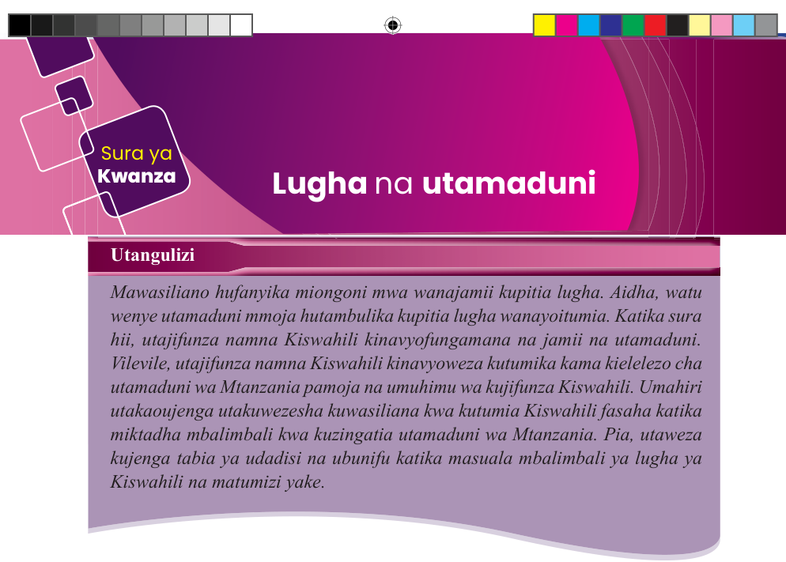
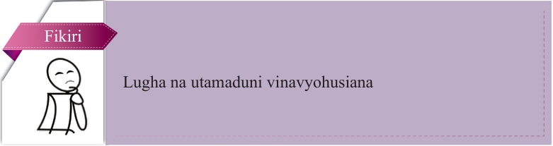
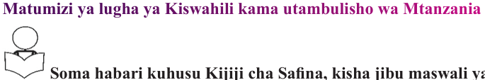
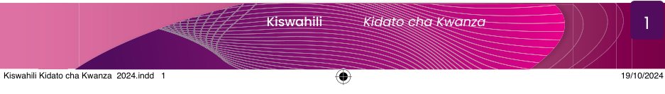

Sura ya Kwanza
Lugha na utamaduni
Utangulizi
Mawasiliano hufanyika miongoni mwa wanajamii kupitia lugha. Aidha, watu wenye utamaduni mmoja hutambulika kupitia lugha wanayoitumia. Katika sura hii, utajifunza namna Kiswahili kinavyofungamana na jamii na utamaduni. Vilevile, utajifunza namna Kiswahili kinavyoweza kutumika kama kielelezo cha utamaduni wa Mtanzania pamoja na umuhimu wa kujifunza Kiswahili. Umahiri utakaoujenga utakuwezesha kuwasiliana kwa kutumia Kiswahili fasaha katika miktadha mbalimbali kwa kuzingatia utamaduni wa Mtanzania. Pia, utaweza kujenga tabia ya udadisi na ubunifu katika masuala mbalimbali ya lugha ya Kiswahili na matumizi yake.

Fikiri
Lugha na utamaduni vinavyohusiana
Matumizi ya lugha ya Kiswahili kama utambulisho wa Mtanzania

Soma habari kuhusu Kijiji cha Safina, kisha jibu maswali yanayofuata.
Kijiji cha Safina kilikuwa na wakazi wenye makabila anuai. Wakazi wa kijiji hicho hawakuweza kuwasiliana kwa sababu walitumia lugha tofauti. Mwaka fulani kulitokea ukame katika kijiji hicho, hali iliyodumu kwa muda mrefu. Kutokana na hali hiyo, iliwalazimu wanakijiji hao kuhamia karibu na chanzo cha maji ili waweze kupata huduma ya maji. Wanakijiji hao walikaa kwa pamoja kwa kipindi chote cha ukame, hali iliyofanya kuwa na msamiati unaofanana kutokana na baadhi ya maneno kutumika mara kwa mara miongoni mwao.



Kiswahili Kidato cha Kwanza 2024.indd 1
19/10/2024 09:39